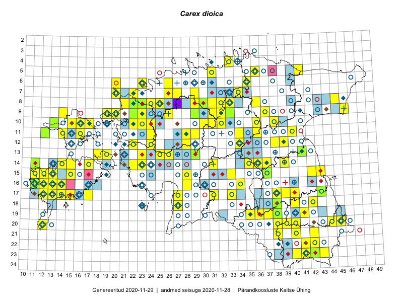

Carex dioica
Uuendatud: 2016-12-01
Kaardile koondatud taksonid: Carex dioica L.

Kaart põhineb 98 kirjel, neist vaatlusi 94 ja eksemplare 4.
Kuvatud viited 20 esimesele andmebaasikirjele, ülejäänud PlutoFis
- Tiit Hallikma, Toomas Kukk, Indrek Tammekänd: 2015-06-09: 12-28: ala
- Toomas Kukk, Eerik Leibak: 2015-08-09: 14-15: ala
- Toomas Kukk, Tiit Hallikma: 2015-06-11: 11-29: ala
- Peedu Saar, Eerik Leibak: 2015-08-16: 12-39: ala
- Toomas Kukk: 2014-06-28: 16-11: GPS punkt
- Thea Kull: 2015-06-15: 10-15: ala
- Thea Kull: 2015-06-14: 10-13: ala
- Thea Kull, Peedu Saar: 2015-06-19: 17-40: ala
- Meeli Mesipuu, Kadri Tali: 2015-07-08: 14-17: ala
- Meeli Mesipuu: 2015-07-08: 14-17: GPS punkt
- Thea Kull, Peedu Saar: 2015-06-17: 17-39: ala
- Toomas Kukk, Thea Kull: 2014-08-21: 10-22: ala
- Maria Abakumova: 2015-07-23: 15-33: ala
- Ott Luuk: 2014-08-28: 10-16: ala
- Mari Reitalu: 2014-08-31: 17-12: ala
- Mari Reitalu: 2014-09-02: 17-12: ala
- Maria Abakumova, Helle Mäemets: 2015-07-03: 17-33: ala
- Mari Reitalu: 2015-08-13: 17-12: ala
- Mari Reitalu: 2015-08-11: 17-12: ala
- Mari Reitalu: 2015-06-16: 16-12: ala